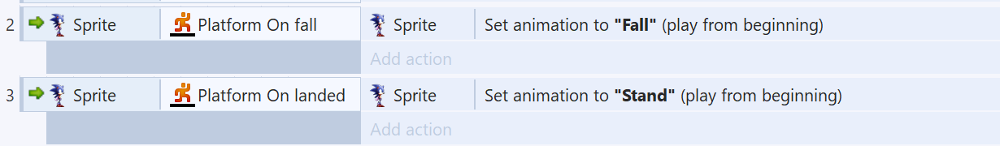
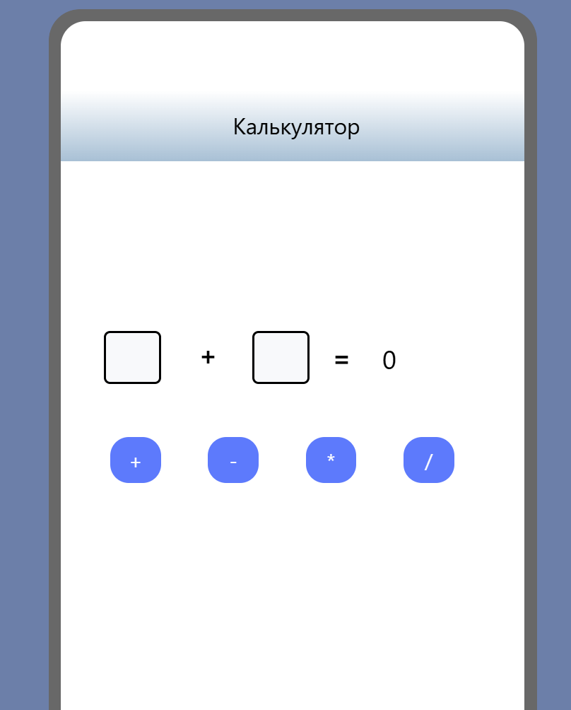
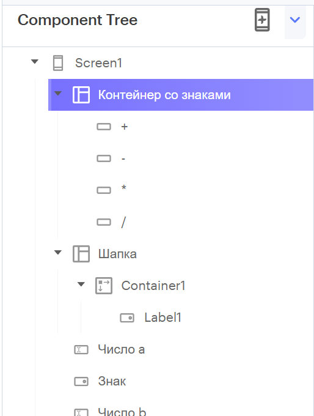

Старшая группа
Программное обеспечение: Construct 2 (зайти и скачать файл kopiya-construct2-r276-setup_2.exe)
Цель: создать демонстрационный уровень.
Задачи:
- Добавить персонажа Sonic [смотри примечание 1] и добавить ему необходимое поведение
- Добавить землю [смотри примечание 1] и добавить ей необходимое поведение
- Добавить анимации для Соника (нажимаем "Edit animations" справа снизу – потом не забываем, что внизу есть малозаметная панель "Animation frames". Потом заходим во вкладу "Event sheet 1" и там добавляем события, и на эти события навешиваем экшены (действия)
Примечание 1:
Скачать эти картинки надо по адресу – https://rainlab.by/ko/s/construct-2/
Подсказки:
Нажми сюда, чтобы увидеть спойлер-подсказку с необходимыми событиями и экшенами

Прошлое д/з (код: ЛО-1)
Программное обеспечение: Thunkable (зайти и сверху справа нажать на кнопку Login)
Цель: создать дизайн-макет.
Задача: создать дизайн-макет (раскладку, сетку) для приложения калькулятора.
Подсказки:
-
Вот так может выглядеть дерево компонентов:

Прошлое д/з (№ -1)
Программное обеспечение: Thunkable (зайти и сверху справа нажать на кнопку Login)
Задача: сделать фичу.
Цель фичи: создать компонент (текст/кнопка/поле для ввода текста), при клике на который меняется его состояние: например, текст и цвет фона.
Описание: можно менять состояние, использовав событие открытия экрана ИЛИ создать специальную кнопку и реагировать на событие нажатия – и после этого менять состояние ИЛИ менять состояние после клика на сам компонент.